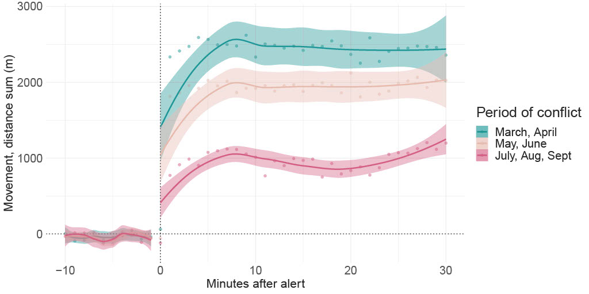
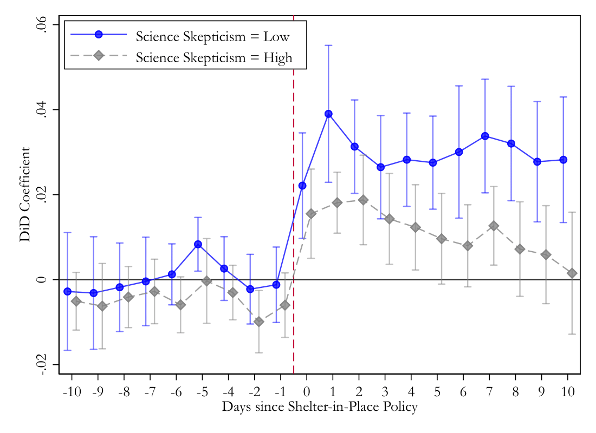
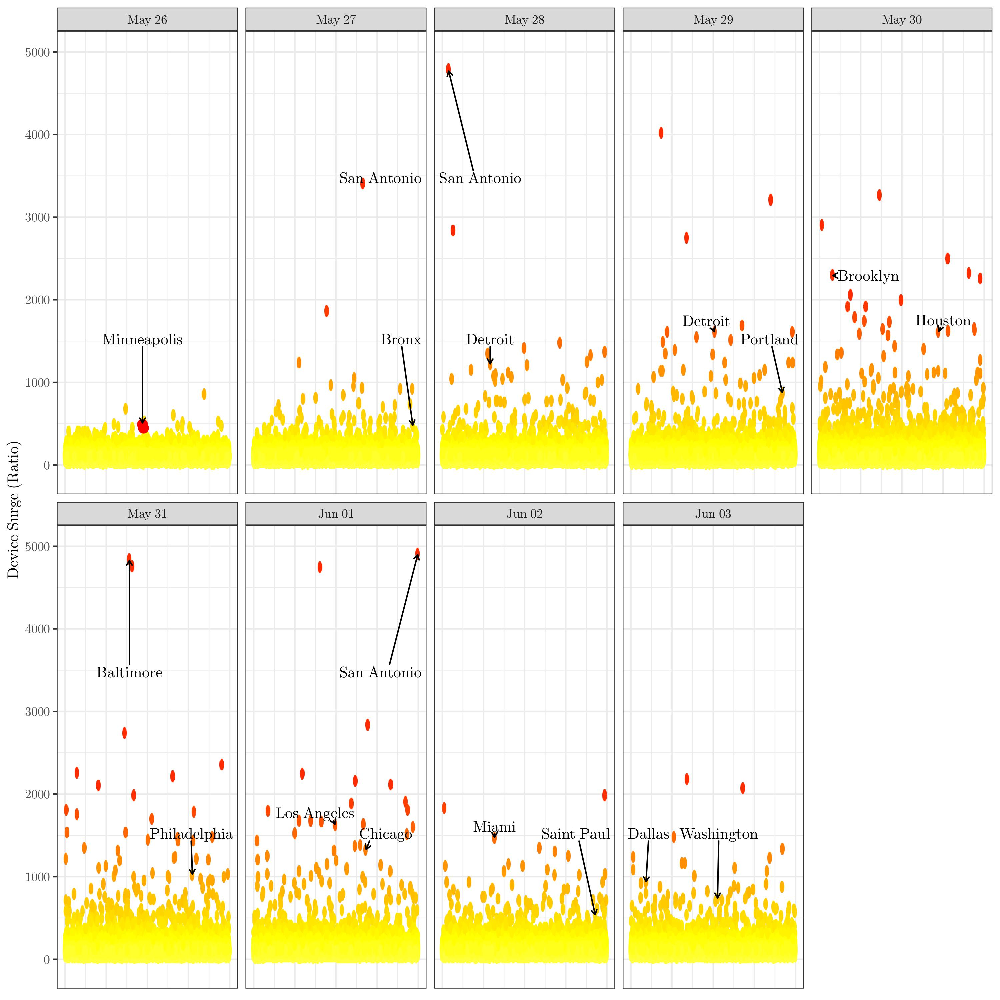
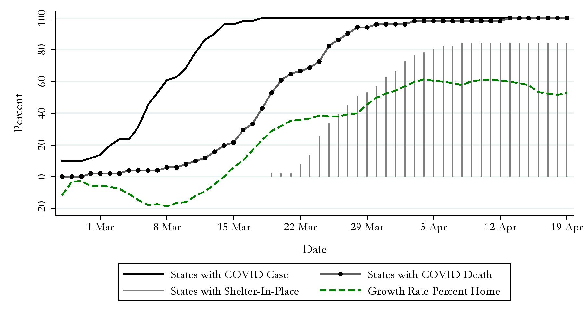
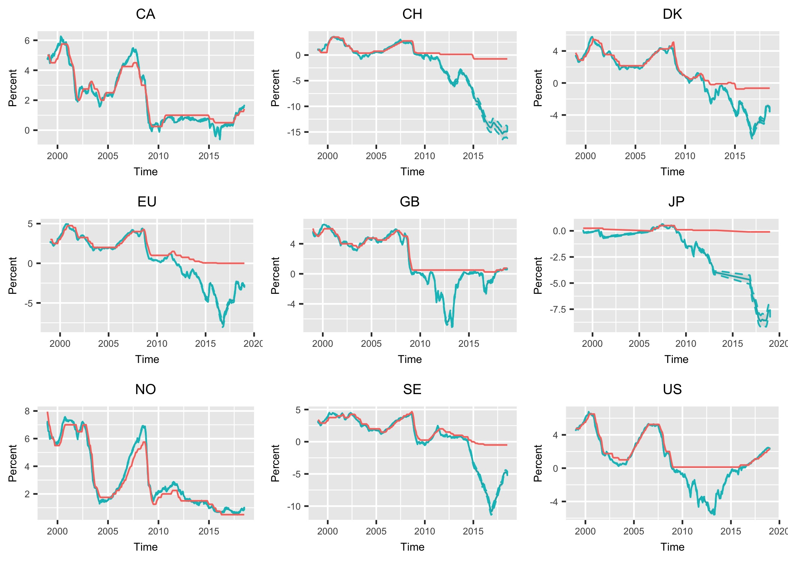

GitHub
Please find my GitHub commits and repositories here:
Regression Discontinuity Design with Distributions (R3D) R package. Implements the method in my job market paper.
A Test for Jumps in Metric-Space Conditional Means (frechesTest) R package. Implements the test for metric-space conditional mean jumps described in the corresponding paper.
Distributional Synthetic Controls (disco) Stata package Implements the method in Gunsilius (2023).
Distributional Synthetic Controls (DiSCos) R package Implements the method in Gunsilius (2023).
Public response to government alerts saves lives during Russian invasion of Ukraine
Git for the paper can be found here, full replication materials are on Harvard Dataverse.

Science Skepticism Reduces Compliance with COVID-19 Shelter-in-Place Policies
Git for the paper can be found here, full replication materials are on OpenICPSR.

Census Block Group Level Presidential Election Results
Datasets of CBG-level election results, for granular matching with, e.g., the American Community Survey, can be found here for 2016 and here for 2020.
Credits for the code basis to Maria Milosh.
Using Mobile Device Traces to Improve Near-Real Time Data Collection During the George Floyd Protests
The estimated protest locations and code to produce them can be found here.

COVID-19: US State Lock-Down Policies - Dates of Implementation
The dataset with implementation dates of states’ lock-down policies from our working paper “The COVID-19 Pandemic: Government vs. Community Action Across the United States” can be found here. For the county-level dataset, see this webpage.
NB only emergency declarations, business and school closures and stay-at-home policies are updated until May 15. When a policy was implemented after 12pm on a given date, we assign it to the next date.

Shadow Rate Estimates
Download here

Extends the series on the Bank of New Zealand website to additional OECD countries. See: https://www.rbnz.govt.nz/research-and-publications/research-programme/additional-research/measures-of-the-stance-of-united-states-monetary-policy/comparison-of-international-monetary-policy-measures
Please cite:
Van Dijcke, D. (2019). Leaning Against the Wind When Inequality Bites Back. Working Paper.
Krippner, L. (2012). Modifying Gaussian term structure models when interest rates are near the zero lower bound. Reserve Bank of New Zealand Discussion Paper, (2012/02).